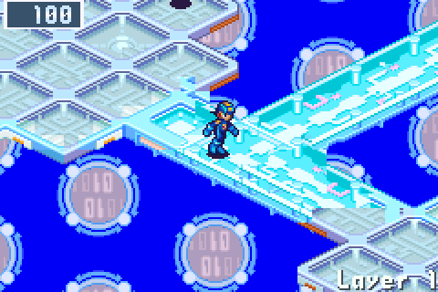
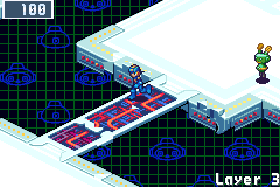
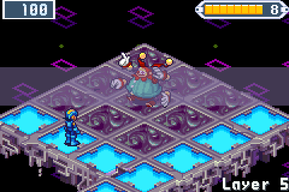
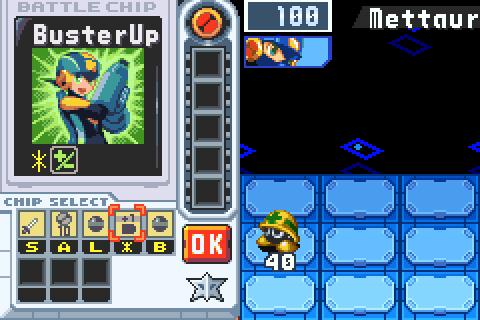
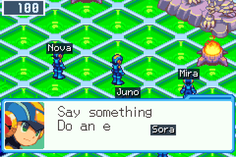
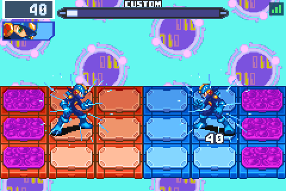

A roguelike for Mega Man Battle Network 6: Cybeast Gregar, played by BN6 itself from your own ROM.
Jack MegaMan into a net that is new every run. Its layers are laid out in the style of BN6's areas and hold its viruses, chips, shops, Mystery Data and music. Each act ends in a guardian's arena, and the Cybeast waits at the bottom. Online, meet other players' MegaMen in the Net Square, trade chips with them and NetBattle them.
Play it in the browser above, or download it for Windows, macOS, Linux, the Steam Deck, Android, iPhone and iPad, handhelds with PortMaster and the New 3DS. It is free and open source.

Mega Man Battle Network 6: Cybeast Gregar (USA), an unmodified .gba file dumped from your own cartridge. Cybeast Falzar, other regions and the Legacy Collection's files do not work yet. Mega Man Battle Network 5: Team Colonel (USA) beside it is optional and brings BN5's areas, Navis, Souls and Liberation Missions into the runs.
No download and nothing on this page contains Capcom's data: without the ROM there is no game. In the browser your ROM stays in your browser and is never uploaded.
A run begins in Lan's room, at his PC. Every layer is new, with BN6's own set pieces: purple data an Unlocker opens, security cubes and their P-Codes, arrow lanes, teleport pads, Rush's gaps and Link Navi obstacles that the run's Crosses clear.
Every third layer ends in a guardian's arena, and the Net Dealer stocks a chip that answers him. His Guardian Data holds five HPMemory, his chip, his Cross where he has one, and a NaviCust program to choose.

Between acts Lan goes home. Central Town remembers the run, AsterLand orders any chip the Library holds, and the townsfolk post requests. After three acts comes the Cybeast Nest on layer 10: its guardian's fall wins the run, in about an hour.
Win it, and the endless net opens: nineteen layers down through the Undernet and the Graveyard to the Cybeast's den, then around again, harder. Bass waits in the Secret Area, and Chaud and ProtoMan turn up for a busting duel.
From the second act, one way at the fork can lead to a layer gone dark. Take it, and the layer becomes one of BN5's Liberation Missions, made afresh from the layer itself: a board of dark panels, each a battle of three turns, DarkHoles and their guardians, and a Darkloid at the far end. The Navis whose Souls the run holds join MegaMan on the board, each with his own command. Liberate it phase by phase against a par; the faster you are, the better the chip the Darkloid leaves for the rest of the run. Needs BN5's ROM beside BN6's.

Put Team Colonel (USA) beside your BN6 ROM, and BN5's areas, viruses, chips and Navis join the runs, in its own tiles, music and bystanders, fought in BN6's engine. Beat one of its Navis for his Soul, and UNITE with it in every battle after.

The gate in Lan's HP leads to a Net Square on a server, eight players a channel. Talk in phrases and emotes from a fixed list, never free text. Trade one spare chip for one at Trade Central. NetBattle other players' MegaMen as they are, with their folders, NaviCust, Crosses and Souls, and rollback keeps it to 2 frames of input delay on a good connection. Watch any battle in the channel from the stands, and dive the same net as everyone else in the week's DeepNet.
Nothing in the Square makes a run stronger: the one thing that comes home is a chip you traded. The Square takes BN6 alone; NetBattles, trades and the DeepNet need BN5's ROM beside it. Every system goes online, NetBattles everywhere but the New 3DS, and anyone can host a server.


Every run starts as strong as the first. What runs open are choices for the next jack-in: folders, a Cross from the first battle, ten threat rungs and helpers. Dad's mails keep your record against every guardian, and BN6's own marks on the title count the milestones.
cyberworld-endless.exe..dmg..apk..ipa, through SideStore or AltStore Classic..cia for FBI, or the .3dsx. The bottom screen is the PET.Saves move between all of them as one file, through the game's SAVES screen. Each system's install, step by step: the player's guide.
Choose your ROM files in the player's two cartridge slots. WASD or the arrow keys move, J is A, K is B, Q and E are L and R, Enter is Start, Backspace is Select, and F1 opens the player's menu; controllers work as they are, and on a phone the game draws its own buttons. OPTIONS on the title sets keys and buttons.
The run is saved in your browser on every new layer. Browsers can clear their data, so keep a copy: Save backup in the player's menu downloads your saves as one file, which also works on every other system. The player on this page keeps its saves apart from the one on the project's website.
Made by Saschb2b.
Mega Man Battle Network is © Capcom. This is an unofficial fan project, not affiliated with or endorsed by Capcom. Everything you see and hear in the game is BN6 itself, running from your own ROM; the pictures on this page are whole frames of it running. The code is MIT-licensed. The game runs on an embedded mGBA core (MPL-2.0), whose license ships with every download. The bn6f disassembly was an invaluable map of the game's data; none of its files are included.